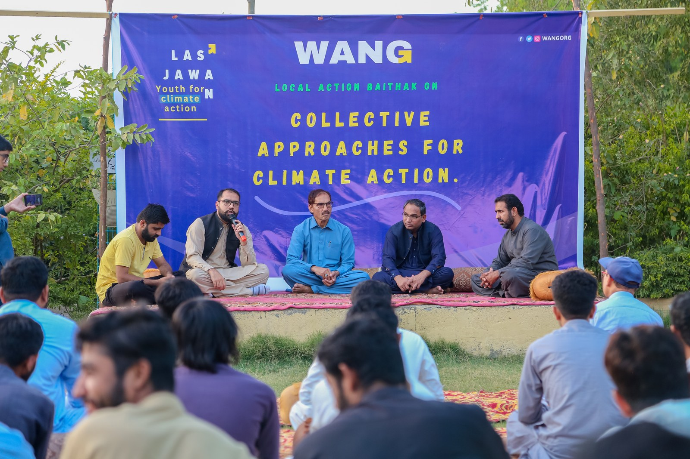
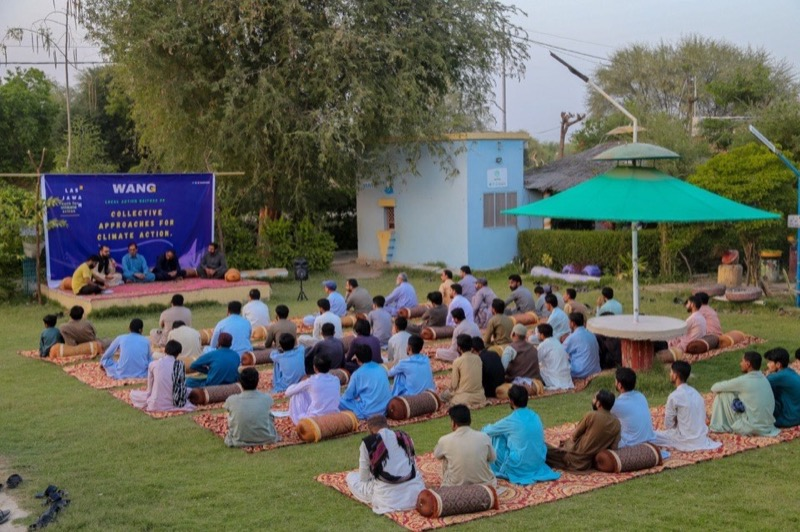

Climate
Community-led climate resilience from Lasbela — not deck slides.
Balochistan faces recurring floods, heat stress, and infrastructure gaps that hit rural households first. WANG works from Ahmed Abad Wang, Bela, District Lasbela, where community response speed and trusted local leadership matter as much as funding. This pillar page summarizes WANG’s field model: youth climate leadership, disaster recovery, resilient shelter where WANG has delivered it, and solar-enabled learning hubs — validated in part by CAREC Gender Climate Champion 2024 recognition.


How WANG works
Training, relief, and infrastructure in one loop.
Youth and women as first responders
Climate programs fail when they treat communities as passive beneficiaries. WANG invests in train-the-trainer cohorts so young people and women can coordinate early warnings, document losses credibly, and connect households to support — including through WIRE where women lead household recovery decisions.
Flood relief tied to longer recovery
Emergency food, shelter materials, and re-enrolment for children are staged alongside lab continuity so learning does not stop when schools close. Journal coverage documents flood cycles and community response in Lasbela.
Solar as resilience, not romance
Solar backup at WALI and village-level installations reduce dependence on diesel generators and keep communication hubs alive when the grid drops — critical during disasters and extreme heat.
Read the field journal
Three starting posts.
- Lasbela rising — climate — youth and community framing.
- Flood relief impact — response and recovery documentation.
- Six ways to help — how partners can align with community needs.
Awards
CAREC Gender Climate Champion 2024
WANG’s integration of gender inclusion and climate programming received international recognition at the CAREC Gender Climate Awards. Primary sources and press context live on Awards and in the dedicated post CAREC Gender Climate Champion 2024.
Partners
Fund climate leaders, resilient shelter tranches, or solar maintenance.
WANG publishes consolidated numbers on Impact and welcomes institutional partners who need audit-friendly documentation and field access in Lasbela.